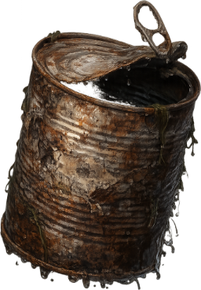
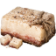
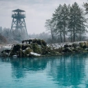

ВИД № 128 / V10Условия ловли
Глубина указана относительно глубины водоёма в точке заброса.
Ловится на спиннинг
Агрессивность
Базовая сила сопротивления: вес × 1. Разница уровней рыбы и снасти может увеличить нагрузку.
Коэффициент выбора
1 / 25 = 0,04
Это вес вида при выборе улова с учётом условий ловли, а не вероятность поклёвки в процентах.
Данные каталога
Клиент v10 · снимок 29.09.2026. Автоматического обновления нет. Для специальных находок могут действовать дополнительные условия снастей.
Вес и редкость
Порог следующей редкости завершает предыдущий диапазон. Трофей — вес строго больше 80 г. 150 г — опорный порог эпической редкости, а не максимальный возможный вес.
Леска для поклёвки
Нижний вес лески не более 480 г
Смотрите первое число в весовом диапазоне самой лески. Правило одинаково для магазинных и самодельных моделей.
Подходят по нижнему порогу: 6 моделей
Список проверяет нижний порог лески. Для поклёвки нужны также подходящие удочка, наживка и условия ловли; для вываживания — достаточная прочность всей снасти.
Магазинные
- Ёрш-04НизкаяНижний вес: 0 гНе отсекает мелкие экземпляры
- Окунь-11ОбычнаяНижний вес: 0 гНе отсекает мелкие экземпляры
- Лещ-25ОбычнаяНижний вес: 0 гНе отсекает мелкие экземпляры
- Карась-33НеобычнаяНижний вес: 0 гНе отсекает мелкие экземпляры
Самодельные
- Самодельная лескаНизкаяНижний вес: 0 гНе отсекает мелкие экземпляры
- Самодельная лескаОбычнаяНижний вес: 0 гНе отсекает мелкие экземпляры
Расчёт: максимальный обычный вес вида × 6. Слишком толстая леска исключает вид ещё до определения трофея. Улучшение «+» не меняет этот нижний порог.
Наживки
 Червь
Червь
Сало Пенопласт
Пенопласт
Прикормки
Не реагирует на прикормки.
Водоёмы

Угли
Малые Щучки · 22–27 ур.
Разряд 3 · Холод 3
Старая речка
Малые Щучки · 50–53 ур.
Разряд 8 · Холод 6
Исходные параметры
| key | tin-can |
|---|---|
| minWeight | 20 |
| maxWeight | 80 |
| rarity | 1 |
| rarity-max | 25 |
| rareWeight | 150 |
| price | 22 |
| depth | bottom |
| areal-grass | true |
| areal-stone | true |
| areal-sand | true |
| frameId | 125 |
| uid | 128 |
| agressiveRate | 100 |
| type | item |
| tackleBait | true |
price — исходный параметр, а не итоговая цена продажи.